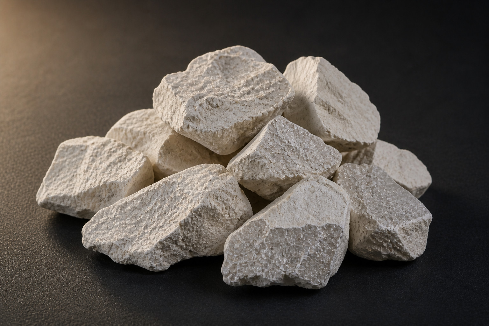

Tabular Alumina
Sintered α-Al₂O₃ aggregate with characteristic tabular crystal habit. Very low closed porosity, high density, and exceptional thermal-shock resistance — the gold standard for high-end refractory castables.

White Fused Alumina (Refractory Grade)
Refractory-grade WFA fused from low-soda Bayer alumina. High purity, low thermal expansion, excellent corrosion resistance against acid slags and molten glass.

Brown Fused Alumina (Refractory Grade)
Tough, blocky brown fused alumina aggregate engineered for high mechanical loading at temperature. Standard in steel-side castables, kiln furniture, and shock-resistant monolithic linings.

Black Silicon Carbide (Refractory Grade)
Refractory-grade SiC for kiln furniture, ladle linings, blast-furnace troughs, and other extreme-thermal-shock environments. High thermal conductivity, low thermal expansion, alkali-resistant.

Where each aggregate belongs.
Quick-reference guide for matching refractory aggregates to vessel and process. Talk to us about non-standard combinations and blended grades.
| Aggregate | Steel Ladles |
Cement Kilns |
Glass Tank Furnaces |
Petrochem Reactors |
Foundry Crucibles |
Investment Casting |
Monolithic Refractories |
|---|---|---|---|---|---|---|---|
| Tabular Alumina | ● | ◐ | ● | ● | ◐ | ● | ● |
| White Fused Alumina | ◐ | ○ | ● | ◐ | ◐ | ● | ◐ |
| Brown Fused Alumina | ● | ● | ◐ | ◐ | ● | ◐ | ● |
| Black Silicon Carbide | ◐ | ● | ○ | ◐ | ● | ○ | ● |